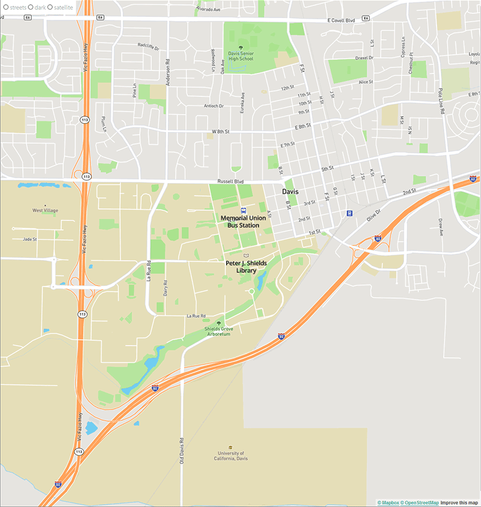
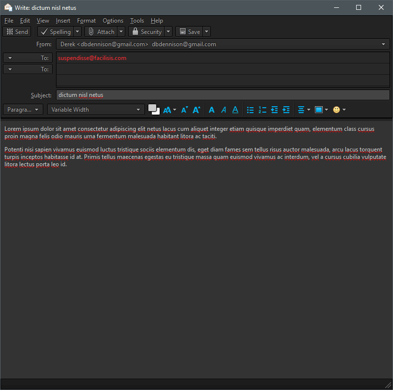

Build systems are methods for automating tasks in production, tailoring the authoring experience to be more intuitive. The more that can be automated, the more that a creator can create. For web markup this means letting the author be expressive as possible with the language and not worry about non content-specific tasks like feature support or vendor flags.
As CSS is implemented differently and new features are explored by multiple browser developers, features are developed behind vendor flags that sandbox potential quirks until the specification is stable. Specifying these flags is not something an author needs to worry about, but is something a browser may require for the feature to function so it can be automated away, or otherwise easily quadruple the lines needed to define a style.
Names are neat. They allow us to point to things in an abstracted way, informing function and easing recognition. Named variables let us point to values from multiple sources, and distribute that value wherever it is called to aid cohesion. Such a core programming concept has been missing from CSS, but it is coming.
Nesting CSS properties has long been a feature of CSS processors, and it too is becoming a standard feature in CSS4. It allows greater organization of properties by directly relating a child to its parent, rather than declaring a new rule. Where before a media query might be set after a bunch of separable rules, each rule can now have its own media query nested within, declared with a uniform variable definition to keep them consistent.
CSSNext is a PostCSS plugin to bridge the gap on these fine features, baking them down into rules that can be read by modern or even older browsers while allowing authors to write in a consistent and reader-friendly way. Machine-optimized code is useful to understand, but is not necessarily useful to write.
SVG filters are a very neat feature… that have rather poor documentation/knowledge base. They can be used to process images in real time, such as applying a gradient map through color matrices for hypsometric tinting or rendering lighting effects onto 2D objects. Here I’ve applied a diffuselighting filter with a directional light to generate a hillshade effect on a cleantopo bathymetry dataset, after much trial and error.
Bathymetry Hillshade
This research was inspired by Adam’s zen garden demo, where the lighting effects may help alleviate the complex and performance heavy particle based approach. Excuse the placeholder art!
Sandy Hillshade
The filter takes the source heightmap input and transforms it into the alpha channel of the image, which is read in the lighting process. The lighting context is set up with feDiffuseLighting, then lit with a directional light for which elevation and angle can be defined. Additionally, the heightmap is interpreted by a displacement filter to distort a sand texture. Finally, the result of the lighting and displacement are multiplied together.
Mapbox is a library and service for authoring GIS interfaces on the web, with this newest library utilizing modern, hardware accelerated WebGL rendering. It provides a very robust API and extensive documentation for effectively working with it – getting a “hello world” out of it took just a few minutes. Further, performance was excellent wherever I could test it, and it appears to be very extensible for supporting any specific requirements.

Studio 5 - Mapbox GL
My focus for this exercise was getting in a degree of interactivity, and displaying some custom data. The map is instantiated to Davis’s coordinates (latitude and longitude coordinates are in reverse order in Mapbox GL!), shows a simple menu with style options, and has location markers. The big win for me was figuring out how to link to an external json file with my location marker definitions, so that I do not have to define my content in the script file.
Studio 4
The voyager probes are a product of pure want for exploration. They're an impressively long-term undertaking with a 60+ year life span. Their goal is to collect the first data on the medium outside our solar system, which they have still not left in nearly 40 years of flight time. It made several flybys of planets collecting spectral and other data, and made the first full solar system family photo, including sol and all of its planets.
Initial
This project chronicles their inner solar system journey over time. Starting with a view of Earth's orbit, the probes are launched by the user, making the view zoom out and start tracking the path of the probes. Were more time available to me, I would have liked to include stopping points and additional information for each major event along their journey. This may have been accomplished through a scrubbing timeline and photograph pop-ups.
Launched!
Web Form Review
Thunderbird. This interface hasn’t changed in many years. Perhaps that means its effective at what it needs to do, considering it has been so popular in its niche for that time. Email is a stable specification and does not suffer the constant re-invention of many other web platforms.

Mozilla Thunderbird
The message composition form opens in a break-out window from the main application, separating it into its own entity with its own hierarchy sandbox. Many options are presented to the user, but largest field, the message input, is what takes up the most attention as is due. Other options are grouped by general function with a label and/or an icon. Any element with only an icon has an identifying hover text, with the icon being directly descriptive of function. Any icon that does not directly indicate its function has a visible label. There are many, many options under drop down or pop-up windows that are not needed for most messages, and so are duly hidden.
Google Gmail
Gmail goes even further in not showing anything beyond bare essentials in its basic composer. I believe its general hierarchy is more effective than Thunderbird. It has the subject and recipient at the top, then the message field, then actions on the message. This more mirrors the flow of things as one composes a message. Especially effective is the send button being well differentiated from the others, and located at a very prominent position as so lauded in Learning IxD From Everyday Objects.
Interface Review
Command line user interfaces have long been the core of computing technology, a relatively low level abstraction that is easy to develop for, but cannot directly guide a user experience as it is primarily user driven. It’s used for input, or markup, to control some program that has been designed to recognize and respond to certain strings. This allows an experienced user of some program to quickly enter specific commands to perform some desired operation, but again provides little direct guidance to those inexperienced.
HTML/CSS is an interface to render things in a browser, typically composed as text markup by a user. The user directly types in the desired attributes with exact desired specifications and the program takes care of the rest. Now consider a graphical user interface that allows the same level of input and control for the multitude of HTML/CSS attributes. There has not to my knowledge been a successful one.
The UI designs I appreciate the most allow utilizing both methods – windows explorer for viewing or navigating files and the command line for performing options on them, big lists of emojis but also being able to directly type in the name of a particular one, etc. It's a trade off of more upfront work for more immediate results later vs less effort and experience required for a visual experience; painting with words is hard.
I have long resisted mobile tech because I do not enjoy the nearly universal visuals-only interfaces. I don’t like wading through subpages and menus and popups to get a program to do something that I’m already familiar with. I want instant gratification and using the simplest methods possible usually makes that happen.
Perhaps vim is too reliant on hidden text commands...